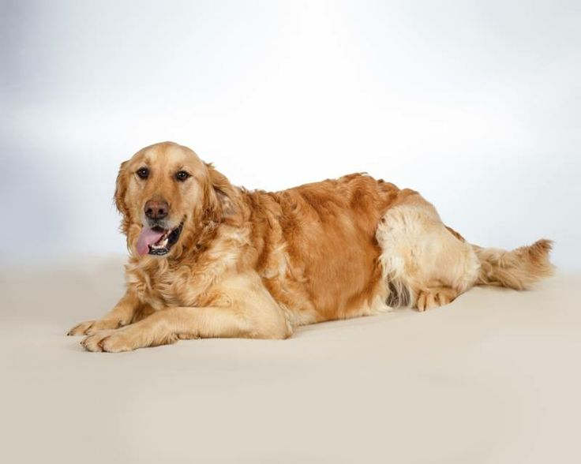
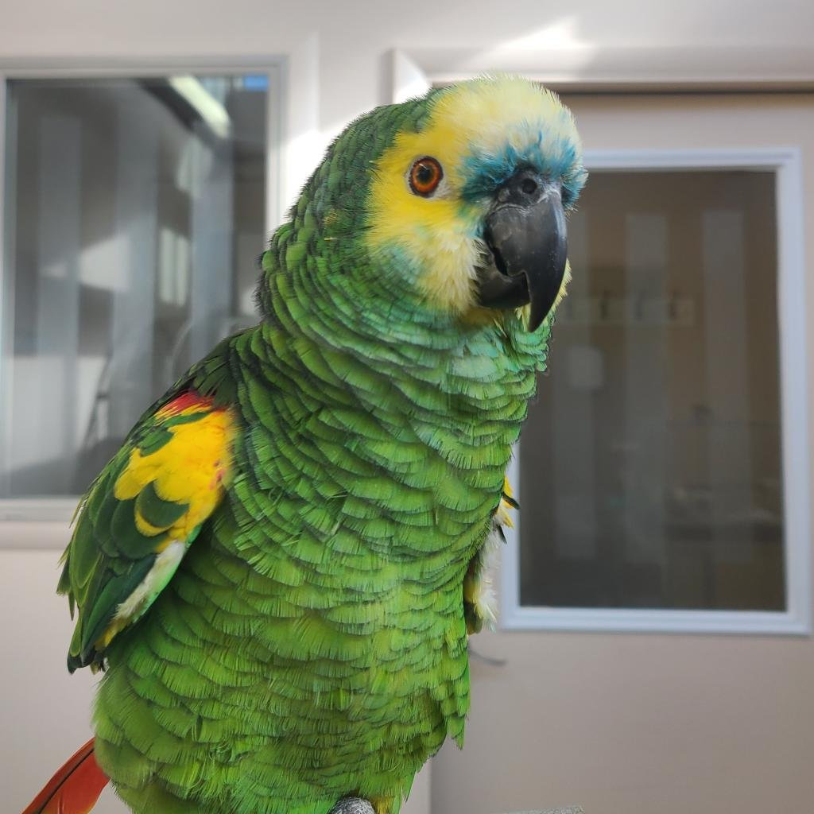

Find Your Forever Friend
Browse available pets
Bella
Golden retriver
3 years
70 pounds
Whiskers
Black tabby
1 year
10 pounds

Coco
Parrot
3 years
70 pounds
Submit an adoption application
Click here to submit an adoption application.
Meet your potential new companion
Please only request an appointment if you are serious about adopting a pet and have every intention of keeping your appointment. Expect to spend approximately 45 minutes - 1 hour at your appointment. Your appointment is in person, here at the shelter.
Contact us at (800)GCLIFFS to request an appointment.
Complete the adoption process
After requesting an appointment, come visit us and meet the pets. Our adoption counselors will guide you through the adoption process.
It should only take about 20-25 minutes to adopt and take your new best friend home!